| Probing CLIP for 3D Spatial Reasoning: Are Occlusion and Containment Linearly Decodable? | |||
| Vincent Lin | |||
| Final project for 6.8300, MIT | |||
| Probing CLIP for 3D Spatial Reasoning: Are Occlusion and Containment Linearly Decodable? | |||
| Vincent Lin | |||
| Final project for 6.8300, MIT | |||
CLIP (Contrastive Language-Image Pretraining) [1] is a powerful vision-language model trained to align image and text embeddings using a massive dataset of image-caption pairs. It demonstrates strong zero-shot performance across diverse tasks without task-specific supervision. However, CLIP’s training objective focuses on global semantic alignment, not fine-grained structural understanding, raising the question of whether it captures 3D spatial relationships, such as occlusion or containment, that are crucial for grounded perception and embodied agents.
This project aims to probe whether 3D spatial relations are explicitly encoded in CLIP’s image embeddings. Rather than evaluating CLIP on image-text retrieval or captioning, we examine whether simple linear classifiers can decode geometric relationships, and whether CLIP’s internal attention maps reflect spatial reasoning. I plan to address the following research questions:
To answer these questions, this work contributes the following:
All code for this work can be found at the following GitHub repository: https://github.com/linv24/6.8300/tree/main/project
Data
The data used for training and evaluation in this project comes from the Rel3D dataset [5], a large-scale, human-annotated dataset for understanding 3D spatial relations between objects. Each sample consists of a subject-object pair situated in a synthetic 3D scene, with annotations indicating whether a specified spatial predicate (e.g., "in front of," "touching," "inside") holds. Scenes are constructed in minimally contrastive pairs of nearly identical scenes where a relation holds in one and not the other, which helps reduce bias from language and 2D appearance. The dataset includes rich geometric information, such as object positions, depth, orientation, and scale, making it a valuable benchmark for evaluating 3D-aware models and spatial reasoning in vision-language systems.
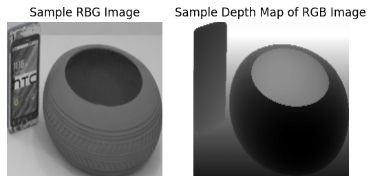
While Rel3D provides 30 unique spatial predicates, we restrict our analysis to a focused subset of 11, selected based on their sample frequency (as reported in Figure 7 of the Rel3D paper) and their conceptual relevance to 3D spatial understanding. Specifically, we categorize predicates into three rough types:
These categories span a range of spatial concepts from planar layout to containment and relative distance. Although it would be ideal to analyze all available predicates, this subset was chosen to keep the scope of the project tractable while still probing a diverse set of relationships.
Each sample in the Rel3D dataset includes several key attributes. These include the full RGB image (optionally cropped to the subject-object pair), the depth map aligned to that image, metadata fields for the subject, object, and predicate names, and a binary label indicating whether the predicate holds in that scene. For our experiments, we construct separate datasets for each of our 11 selected predicates. Each per-predicate dataset contains only samples annotated with that specific predicate and includes, for every example:
These datasets are used to train individual binary classifiers for probing whether spatial relations are linearly decodable from CLIP features.
Sample counts for the constructed predicate datasets are summarized in the table below:
| Predicate | # Train Samples | # Valid Samples | # Test Samples | # Total Samples |
| below | 932 | 100 | 148 | 1180 |
| to the left of (wrt you) | 1,017 | 100 | 252 | 1,369 |
| to the right of (wrt you) | 954 | 106 | 230 | 1,290 |
| to the side of | 1,029 | 100 | 348 | 1,477 |
| on | 1,444 | 186 | 232 | 1,862 |
| covering | 256 | 20 | 314 | 590 |
| inside | 426 | 52 | 120 | 598 |
| in front of | 820 | 84 | 128 | 1,032 |
| behind | 854 | 82 | 66 | 1,002 |
| near | 450 | 48 | 238 | 736 |
| far from | 178 | 26 | 94 | 298 |
Notably, both the full Rel3D dataset and our derived per-predicate datasets are balanced: for every predicate and data split, there is an equal number of positive and negative examples. This balance ensures that classifier performance is not biased by class imbalance and that evaluation reflects the model's ability to distinguish spatial configurations based solely on feature representations.
Models
For feature extraction, we use the pretrained CLIP ViT-B/16 model from Hugging Face. We specifically use the patch-16 variant, which divides input images into 16×16 patches before encoding them. Compared to patch-32 variants, this model offers higher spatial resolution in its vision encoder, which we expect to be beneficial for capturing the fine-grained visual details relevant to spatial reasoning in the Rel3D dataset.
To evaluate whether CLIP embeddings encode 3D spatial relationships, we train a separate binary classifier MLP for each predicate. Each classifier receives feature vectors derived from the CLIP embeddings (e.g., image-only, or combinations of multiple sample features) and predicts whether the predicate holds (label = 1) or does not hold (label = 0) for a given subject-object pair. The output is interpreted as the probability that the predicate is true.
The architecture of each MLP is deliberately kept small and simple to ensure that any predictive power primarily reflects information already present in the input embeddings. In particular, we want to probe the linear decodability of spatial relationships, not learn them from scratch. Each MLP consists of the following layers:
Linear(input_dim, 128) → ReLU() → Dropout(0.1) → Linear(128, 1)
We empirically found that a hidden dimension of 128 offered a good balance between performance and regularization, yielding consistent results across predicates without signs of overfitting (see Appendix for additional results).
Experimental Setup
We conduct all experiments under two main input conditions: one using only CLIP image embeddings, and the other using a combination of CLIP image and depth embeddings. These setups allow us to evaluate how much spatial information is linearly decodable from image features alone, and whether incorporating depth improves performance on spatial relation prediction.
In the image-only setting, each MLP is trained using only the 512-dimensional image embedding output by CLIP. The model is trained for a total of 8,000 steps per predicate, with the number of epochs scaled to the size of each predicate-specific dataset. We use a learning rate of 1e-5.
In the image+depth setting, we concatenate the CLIP embedding of the RGB image with the CLIP embedding of the corresponding depth image (converted to 3-channel grayscale for compatibility with CLIP). This results in a 1024-dimensional input vector. Each MLP is trained for 16,000 steps per predicate, with a smaller learning rate of 1e-6 to accommodate the increased input dimensionality.
For both settings, we use binary cross entropy loss as our cost function and the AdamW optimizer with a weight decay of 1e-5. During training, we compute the binary classification confusion matrix of the model at each step, from which we derive standard classification metrics including accuracy, precision, recall, and F1 score at each training step. To ensure reliable evaluation, we save the model with the lowest validation loss for each predicate and use it to report results on the test set. For each predicate dataset, we also conduct five trials and average the loss and accuracy across all five trials to mitigate any effects on the evaluation of model from training instabilities that we observed during our experiments, likely due to the smaller size of the training datasets used.
We intentionally refrain from training predicate classifiers on depth images alone. Since CLIP is pretrained exclusively on RGB images, its image encoder is not semantically equipped to handle raw or grayscale depth inputs. Instead, we treat the depth embedding as an augmenting signal to the main RGB image embedding.
Results: Image Embedding Alone
To evaluate the extent to which CLIP embeddings encode spatial relations, we trained separate binary classifiers for each of the 11 selected predicates and evaluated them on the validation and test splits. The figures below summarize the performance of these classifiers. We present the averaged training and validation loss and accuracy curves for each predicate, as well as bar plots showing predicate-wise accuracy, precision, recall, and F1 scores on both the validation and test datasets. All evaluation metrics are computed using the model checkpoint with the lowest validation loss for each predicate. We note that the number of training steps per predicate varies based on the number of available samples, so the x-axis in the training/validation curves are a normalized number of steps to better visualize curves together.
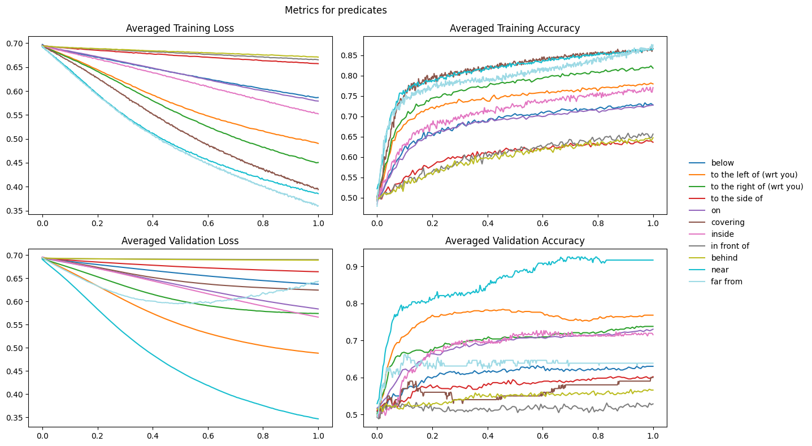
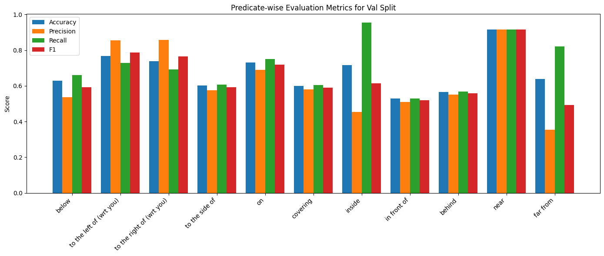
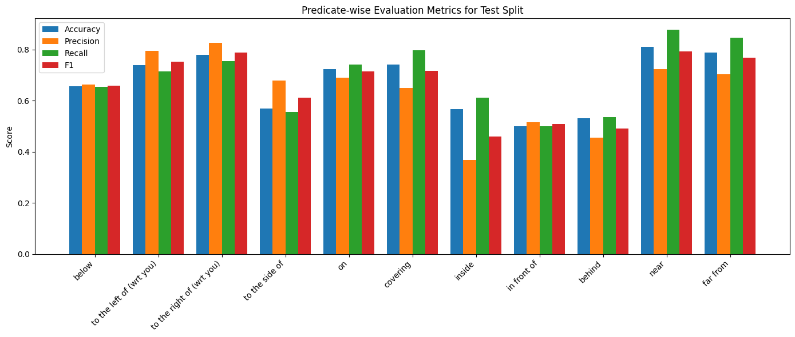
Several predicates achieved strong performance across all four classification metrics. Notably, “near”, “far from”, “to the left of (wrt you)”, “to the right of (wrt you)”, and “on” exhibit high training and validation accuracy, as well as strong precision, recall, and F1 scores on both validation and test splits. These predicates are relatively grounded in 2D geometric layout or consistent spatial positioning in the image frame. “on” and left/right positional predicates rely on fairly consistent object configurations and perspective framing, which may make them easier to decode. “near” and “far from” could involve exclusively 2D layout observation, but could also involve depth. The extent of which the model uses depth vs 2D spatial reasoning on these predicates is unclear from these results and is explored in more detail in later sections.
A second group of predicates, “covering”, “below”, and “to the side of”, shows moderate classification performance. These predicates typically involve partial occlusion or vertical spatial relations, which can be more visually ambiguous. While recall tends to remain relatively high for this group (particularly for “covering”), their precision lags behind, suggesting the model often predicts that the predicate holds even when it does not. This over-prediction may indicate a bias in the CLIP embedding space toward identifying partial overlaps or layered arrangements as indicative of these relations, even when they are not semantically intended.
The final group, “inside”, “in front of”, and “behind”, pose the greatest challenge for the classifiers. These predicates depend on fine-grained 3D spatial reasoning, such as occlusion, perspective, and containment. Among them, “inside” suffers from particularly low precision and F1 scores, despite relatively strong recall. This suggests that while the model often predicts the predicate as true when it actually is (high recall), it also incorrectly identifies many negatives as positives (low precision). One plausible explanation is that containment relationships are subtle and less consistently represented in 2D image embeddings, especially when visual cues like shadows or enclosure boundaries are not prominent. Similarly, “in front of” and “behind” may require depth understanding or camera-relative positioning that CLIP embeddings, which are trained on image-text pairs without explicit 3D supervision, do not robustly encode.
Together, these results suggest that CLIP embeddings encode certain spatial relationships quite well, particularly those that are geometrically grounded and viewpoint-stable, while relations requiring occlusion or volumetric reasoning remain challenging to linearly decode. This underscores the need for either additional architectural support or multimodal cues (e.g., depth) to more effectively capture complex 3D spatial semantics.
Next, we conduct a couple of more in-depth analyses on a couple of interesting predicates. We start with the “inside” predicate.
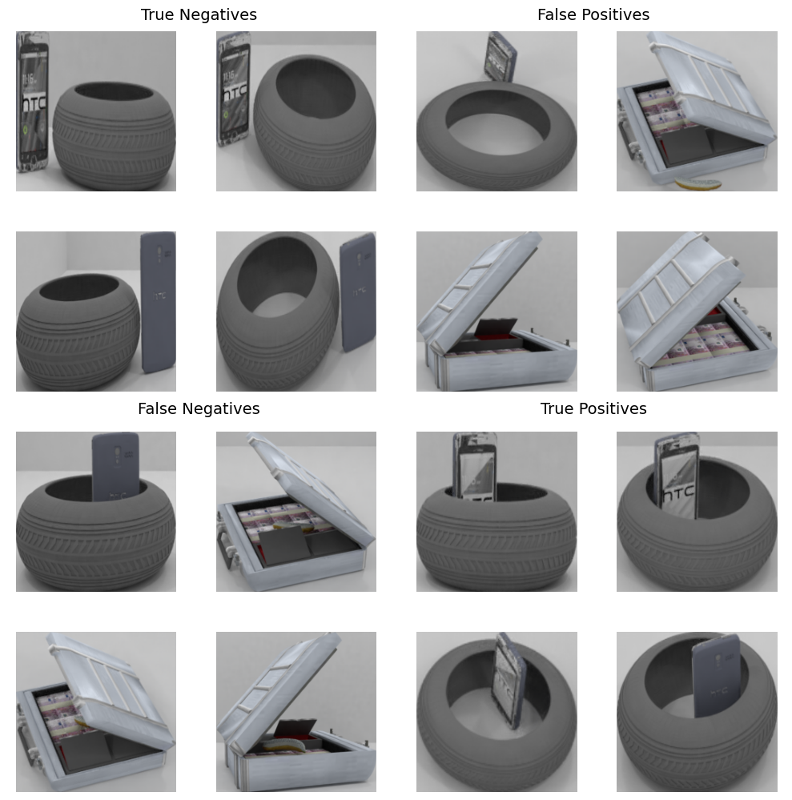
The figure above presents qualitative examples from the “inside” test set, categorized by their classification outcome: True Negatives, False Positives, False Negatives, and True Positives. Each sample was predicted using the MLP trained on CLIP embeddings of image inputs alone. These examples help reveal patterns and potential failure modes in how spatial containment is represented (or not) in the CLIP feature space.
We observe a pattern among the true negatives where the subject and object are clearly separated, with no occlusion or visual overlap. This suggests that the model is able to reliably identify negative cases when no containment cues are present.
The false positives highlight some of the model’s weaknesses. At least one sample shows visible partial occlusion, which may act as a misleading cue for the MLP to classify the sample as positive. Several other false positives include scenes where the subject (e.g., a fruit or phone) is entirely absent rather than explicitly placed outside the container. This indicates that the model may not be sensitive to the absence of an object, likely because the CLIP embedding lacks object presence awareness or because containment cues are inferred from visual context alone.
In the false negatives, the subject is partially occluded in several cases, and there are noticeable lighting differences that may obscure depth and containment cues. These inconsistencies seem to prevent the classifier from correctly identifying valid “inside” relationships, even when they are visually plausible.
In contrast, true positives tend to have a clear view of both subject and object, with favorable angles and minimal occlusion. These examples likely provide the most direct and unambiguous containment cues, enabling the MLP to correctly predict the predicate.
In summary, these examples support the conclusion that while the CLIP embeddings do capture some visual containment cues, the MLP remains sensitive to occlusion, lighting variation, and object presence, all of which are crucial for understanding “inside” relationships. This highlights the inherent ambiguity and non-linearity of occlusion-based reasoning in purely vision-language embedding spaces.
To further probe the ability of CLIP embeddings to encode 3D spatial relationships, we examine predictions for the “far from” predicate. This relation requires some understanding of depth and relative distance, which makes it a useful test case for evaluating whether CLIP's image features implicitly capture geometric cues beyond 2D layout.
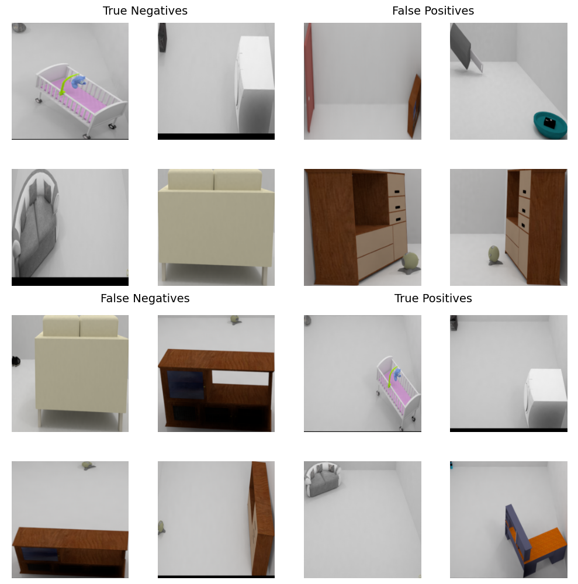
In the true positive examples, we see subject-object pairs that are indeed far apart, with their separation clearly visible in the 2D, planar view of the image. These cases suggest that when objects are far apart in screen space, CLIP embeddings are sufficient for a linear classifier to correctly identify the relation. This reinforces prior findings that 2D spatial information is reasonably well preserved in the embedding space.
However, several of the false negatives reveal a more subtle limitation, where the subject and object are positioned at significantly different depths, yet appear visually close in the image’s 2D projection. This results in incorrect negative predictions, indicating that while the physical distance between objects may be large, it is not easily recoverable from CLIP’s image embeddings alone. These observations highlight the difficulty of relying solely on CLIP features for inferring depth-based relations, especially when depth cues are subtle or distorted by perspective.
Overall, this qualitative analysis supports the conclusion that while CLIP is capable of encoding 2D spatial layout effectively, its ability to represent 3D spatial relationships, particularly those involving depth, is limited. Linear probes trained on CLIP embeddings struggle to recover distance information when it is not explicitly visible in the 2D frame, emphasizing the need for additional signals (like depth maps or 3D priors) to reason about spatial relationships beyond flat geometry.
Results: Image Embedding + Depth Embedding
To address the challenges of linearly decoding depth-based spatial relationships, we extend our probing experiments by incorporating both image and depth embeddings into the input of each binary classifier. Motivated by the limitations observed in the previous results, we hypothesize that providing more explicit depth information may improve the model’s ability to resolve 3D spatial configurations. Instead of training each MLP on the 512-dimensional CLIP image embedding alone, we concatenate the image embedding with the corresponding 512-dimensional embedding of the depth image, resulting in a 1024-dimensional input. This design allows the classifier to leverage both RGB appearance and spatial depth cues, with the goal of improving performance on depth-sensitive predicates while maintaining strong performance on others.
As in the image-only experiments, we plot the averaged training and validation loss and accuracy curves, as well as predicate-wise performance metrics on the validation and test splits below. To evaluate the impact of depth, we also compare test accuracy between models trained on image embeddings alone and those trained on the concatenation of image and depth embeddings.
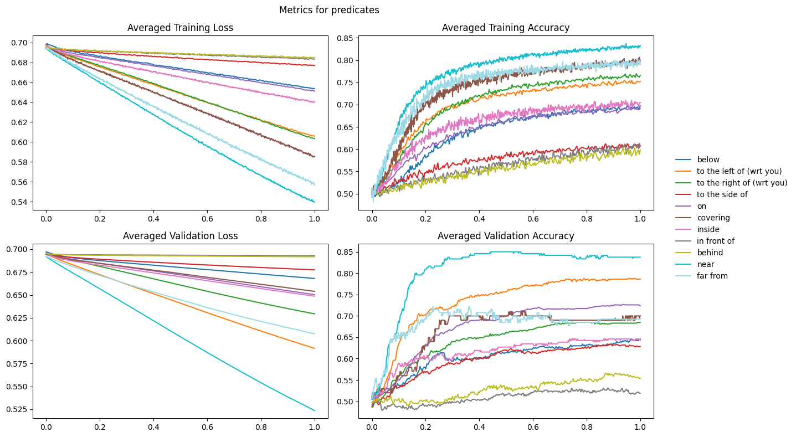
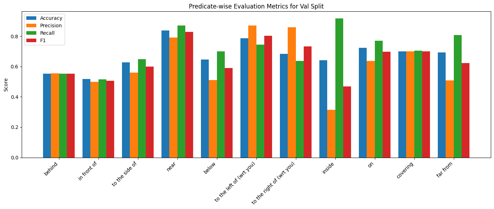
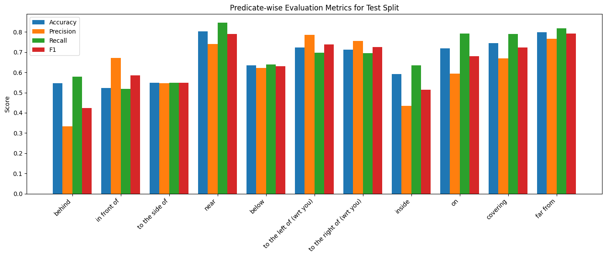
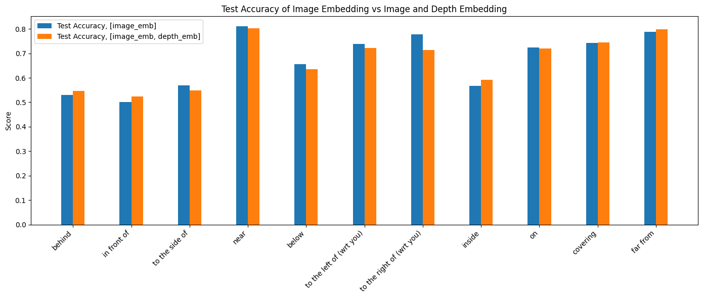
Surprisingly, the results show minimal difference in performance between the two setups. For most predicates, the addition of depth embeddings either slightly improves or slightly reduces accuracy, with no consistent trend. This suggests that either (1) the MLPs predominantly rely on the image embeddings even when depth is included, or (2) the depth embeddings themselves are too similar to the image embeddings to offer any meaningful additional signals. To explore this further, we compute the cosine similarity between the image and depth embeddings for each sample and report the average similarity per predicate. As shown in the table below, the average similarity is consistently high, hovering around 0.8 across all predicates:
| Predicate | Cosine Similarity |
| below | 0.8051 |
| to the left of (wrt you) | 0.7893 |
| to the right of (wrt you) | 0.7900 |
| to the side of | 0.8006 |
| on | 0.8006 |
| covering | 0.7832 |
| inside | 0.8112 |
| in front of | 0.8041 |
| behind | 0.7996 |
| near | 0.8149 |
| far from | 0.8333 |
This consistently high similarity suggests that the CLIP model produces very similar embeddings for both RGB and depth images, likely because CLIP is not trained on grayscale or monochromatic input data. This supports the hypothesis that the depth embeddings themselves are too similar to the image embeddings to provide much additional unique information. Our method of simulating RGB for depth images, by duplicating a single grayscale channel into three channels, likely produces embeddings that are redundant with the original RGB image embeddings. These findings suggest that depth information, as embedded by a pretrained RGB-only CLIP model, is not sufficiently distinct to meaningfully aid in decoding spatial relationships. Future work may explore alternative strategies for incorporating depth, such as different methods for adapting single-channel depth maps for CLIP embedding or using a dedicated depth encoder pretrained on depth maps.
In this work, we investigated whether 3D spatial relationships are linearly decodable from CLIP image embeddings by training predicate-specific binary classifiers on the Rel3D dataset. Our results show that CLIP embeddings capture a variety of 2D spatial relationships (e.g., “near,” “on,” “to the left of”) relatively well, with high classification accuracy and stable training curves. However, depth-dependent and occlusion-based predicates such as “inside,” “behind,” and “in front of” remain challenging. Our analysis suggests that these relationships are more ambiguous in the CLIP embedding space, likely due to their reliance on fine-grained depth cues and 3D reasoning not explicitly represented in 2D vision-language pretraining. To address this, we experimented with augmenting the classifier input using depth image embeddings. By concatenating CLIP embeddings from the RGB and grayscale depth images, we aimed to improve performance on depth-reliant predicates. However, we found that performance remained largely unchanged. Further analysis revealed that the image and depth embeddings are highly similar, likely due to CLIP not being trained on grayscale or depth modalities. This suggests that the depth input, as currently represented, adds little new information to the classifier.
This work is constrained by several limitations. First, we made minimal use of image augmentations beyond cropping and centering, which may have limited training stability and robustness, especially for predicates with fewer samples; future work may benefit from incorporating more varied and robust augmentations. Additionally, we evaluated only a subset (11 out of 30) of the available Rel3D predicates, while a broader evaluation over more predicates may reveal additional, more nuanced insights.
One promising future direction is to investigate whether CLIP text embeddings for the subject, predicate, and object can enrich the classifier's understanding of spatial relations. Rather than relying on depth, we could concatenate [image_emb, subject_emb, predicate_emb, object_emb] as input to the classifier to test whether textual information aligned with the image enhances performance. Another valuable extension would be to evaluate generalization across objects by holding out certain objects during training to assess how well spatial understanding transfers. Conducting object-wise or category-wise analyses could help disentangle whether performance differences stem from the spatial predicate or the object identities themselves.
The insights gained from this project suggest a few pathways for enhancing CLIP’s capacity for depth perception. Given the model's current limitations in representing depth and occlusion relationships, one promising direction is to incorporate explicit spatial supervision, for instance, through contrastive training on synthetic or real-world datasets with annotated 3D relationships. Additionally, modifying the image encoder architecture to attend to monocular depth priors or leveraging auxiliary geometric tasks (such as depth estimation or occlusion prediction) during pretraining could encourage the formation of embeddings that are more sensitive to 3D spatial structure. Many avenues still exist for bridging the gap between 2D appearance and 3D understanding in vision-language models.
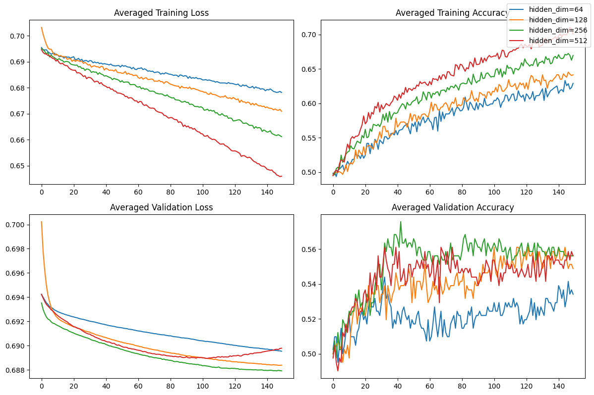
hidden_dim=128 demonstrates the highest validation accuracy without showing signs of overfitting. The plots pictured here are evaluated on the image embedding only, but we use the same hidden dimension for all MLPs, image and image+depth.